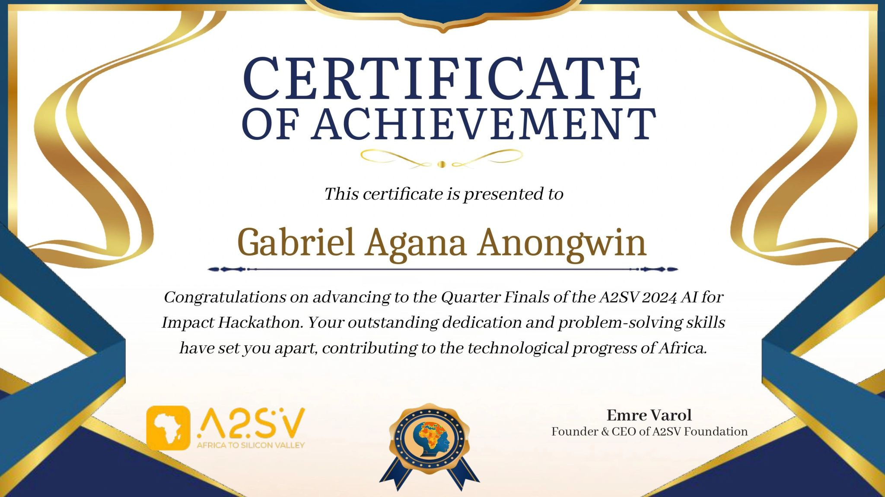
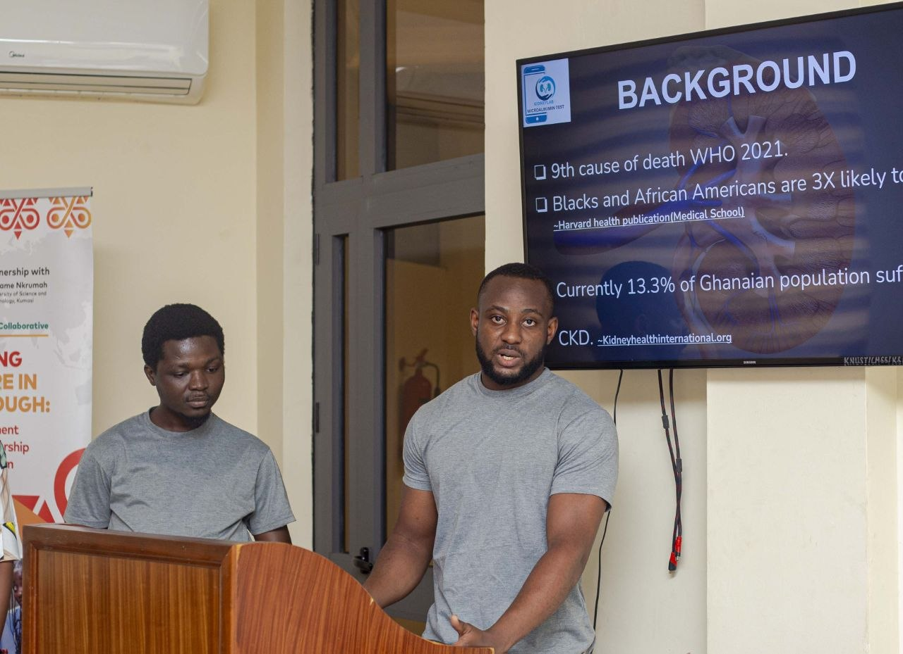
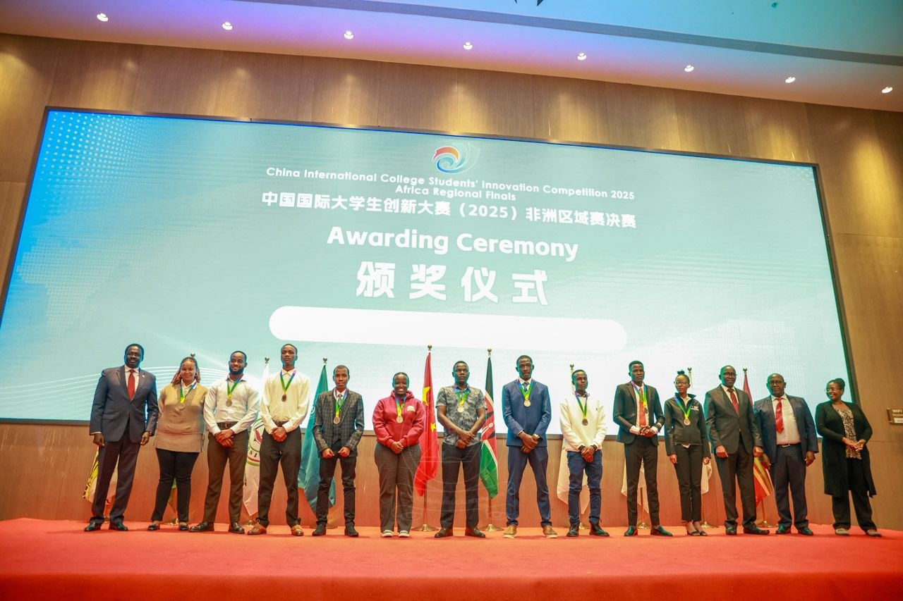

AI-powered early detection and monitoring of kidney disease
Kidney disease is often detected late in Africa due to limited diagnostic tools, lack of awareness, and fragmented healthcare systems. This leads to high mortality rates and preventable complications.
Renolab leverages machine learning to analyze patient data and detect early signs of kidney dysfunction, enabling proactive care and improved patient outcomes.
Renolab was built under the mentorship of Prof. PK Mante, whose guidance shaped our clinical and research direction. Alongside my co-founder Solomon, we set out to tackle early detection of kidney disease using data-driven approaches.

Our first major test was the A2SV Hackathon, where we competed among thousands of participants across Africa and reached the quarterfinals. This validated both our idea and our execution capabilities.

We pitched Renolab and secured seed funding through the Mastercard Foundation SBS program, enabling us to move from concept to real-world development and validation.

At the CICSI African Division Finals in Nairobi, Renolab was awarded a Bronze Medal, marking a major milestone in our journey and recognition of our innovation on an international stage.
AI models for early disease detection
Track progression and risk factors
Actionable recommendations for clinicians